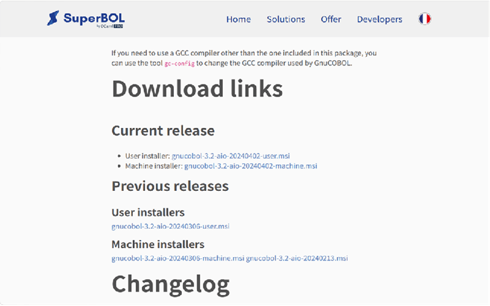
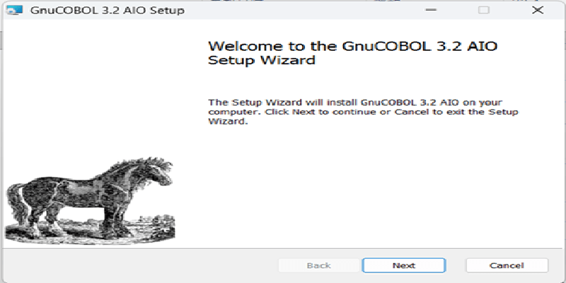
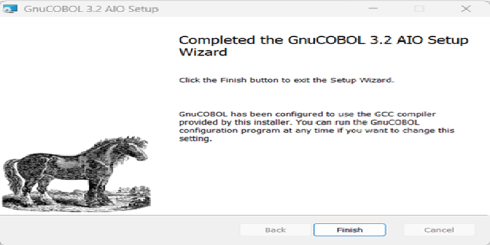
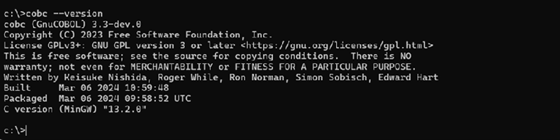
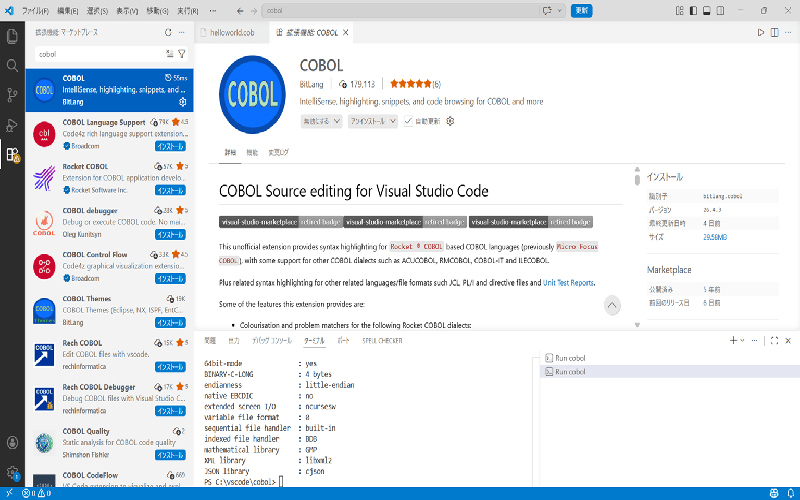
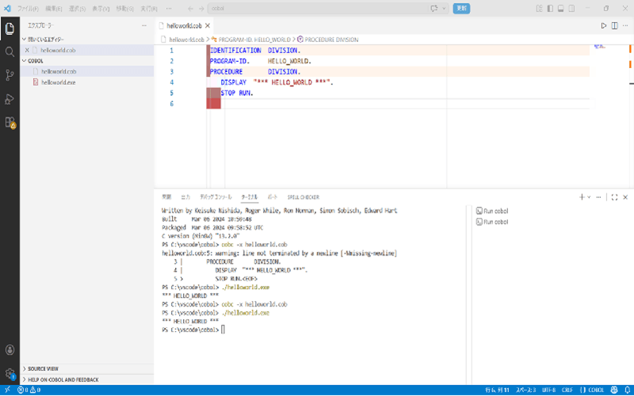
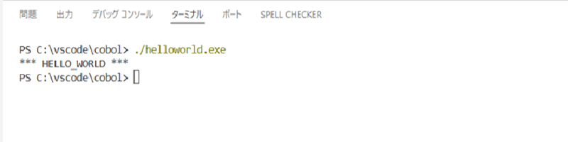
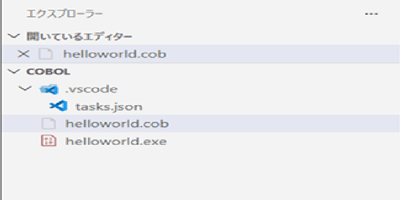
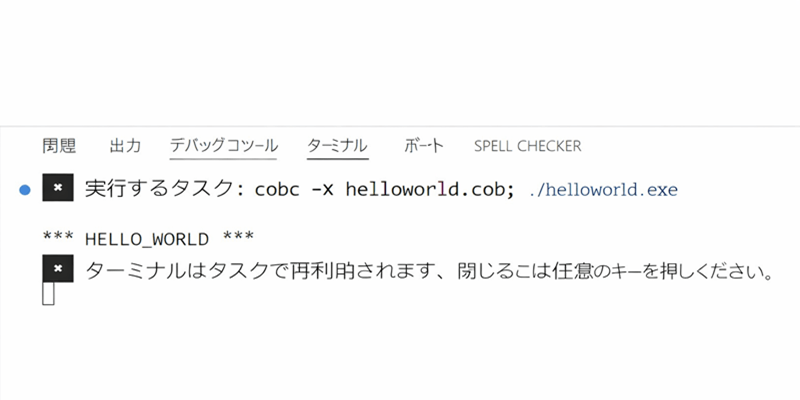

1. はじめに
COBOL を VSCode で動かしてみたいと思い、GnuCOBOL を Windows にインストールして実行環境を整えました。 日本語でまとまった情報が少なく、特に「VSCode で実行するまで」の手順が分かりづらかったため、今回自分が実際に行った手順をまとめています。
インストール画面や VSCode の設定画面もキャプチャしていますので、同じように環境を作りたい方の参考になれば幸いです。
2. GnuCOBOL のインストール手順（Windows）
● ダウンロード

● MSI の実行

● インストール完了

● 動作確認（cobc --version）
cobc --version
バージョンが表示されれば OK です。
3. VSCode に COBOL 拡張機能を入れる
● COBOL (bitlang) をインストール

Themes ではなく “COBOL” を選ぶ点に注意。
● 補完・シンタックスハイライトの確認

4. HELLO_WORLD を書いて実行する
● ソースコード
IDENTIFICATION DIVISION.
PROGRAM-ID. HELLO_WORLD.
PROCEDURE DIVISION.
DISPLAY "*** HELLO_WORLD ***".
STOP RUN.
● ビルド
cobc -x helloworld.cob● 実行
./helloworld.exe● 実行結果

5. VSCode でワンクリック実行できるようにする（tasks.json）
● .vscode フォルダを作成

● tasks.json の内容
{
"version": "2.0.0",
"tasks": [
{
"label": "COBOL Build & Run",
"type": "shell",
"command": "cobc -x helloworld.cob; ./helloworld.exe",
"group": {
"kind": "build",
"isDefault": true
},
"problemMatcher": []
}
]
}
● 実行方法
Ctrl + Shift + B または「COBOL Build & Run」を選択

6. VSCode で COBOL を快適に書くためのポイント
- 補完（DISPLAY など）
- アウトライン表示
- ターミナル統合
- 拡張機能の設定項目（必要なら）
7. まとめ
今回は、Windows 上で GnuCOBOL をインストールし、VSCode で COBOL を実行できる環境を構築しました。 特に、tasks.json を使ったワンクリック実行は作業効率が大きく上がるのでおすすめです。 今後は、COPYBOOK の利用や、もう少し複雑な COBOL プログラムにも挑戦していきたいと思います。